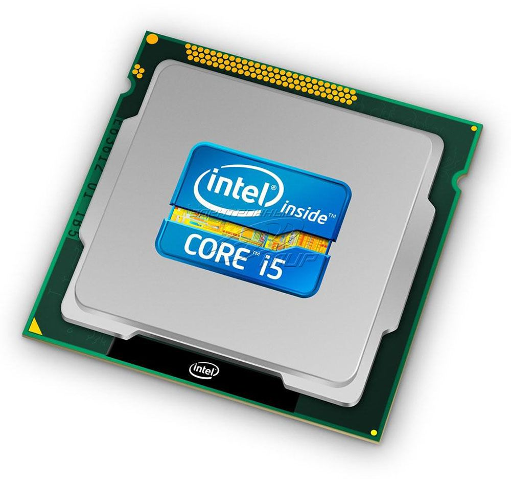
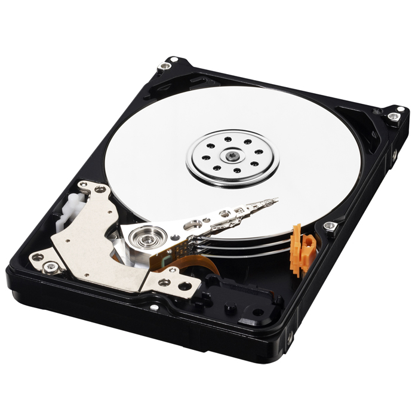
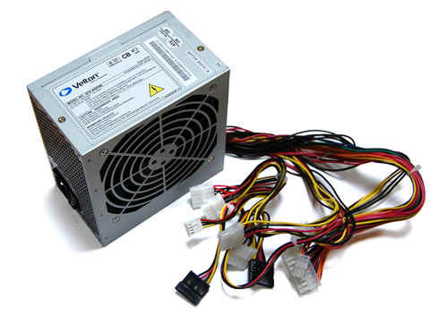

состоит из следующих деталей:
- Материнская плата
- Процессор
- Видеокарта
- Оперативная память
- Жесткий диск
- Блок питания
 Cистемный блок — корпус, в котором находятся основные функциональные компоненты
персонального компьютера. Корпуса обычно созданы из деталей на основе стали, алюминия и
пластика, также иногда используются такие материалы как дерево или органическое стекло.
Таким образом, системный блок это корпус-оболочка для жизненно важных органов компьютера,
таких как блок питания, материнская или системная плата, процессор, жесткий диск (винчестер),
оперативная память, видеокарта, оптический привод (CD,DVD).
Cистемный блок — корпус, в котором находятся основные функциональные компоненты
персонального компьютера. Корпуса обычно созданы из деталей на основе стали, алюминия и
пластика, также иногда используются такие материалы как дерево или органическое стекло.
Таким образом, системный блок это корпус-оболочка для жизненно важных органов компьютера,
таких как блок питания, материнская или системная плата, процессор, жесткий диск (винчестер),
оперативная память, видеокарта, оптический привод (CD,DVD).
 Cложная многослойная печатная плата,
Cложная многослойная печатная плата,
являющаяся основой построения вычислительной системы (компьютера).
В качестве основных (несъёмных) частей материнская плата имеет:
 Самый важный компонент, мозг компьютера. Он выполняет все логические и вычислительные операции, осуществляет контроль за прочими составляющими системного блока. Первым общедоступным микропроцессором был 4-разрядный Intel 4004, представленный 15 ноября 1971 года корпорацией Intel. Процессоры совершенствуются до сих пор, они могут ыполнять все больше и болоьше операций в секунду.
Изобретён восьмиядернй пройцессор Intel Core i7 Extreme Edition
 Видеокарта — устройство, преобразующее графический образ,
хранящийся как содержимое памяти компьютера(или самого
адаптера), в форму, пригодную для дальнейшего вывода на
экран монитора. Первые мониторы, построенные на электронно-лучевых
трубках, работали по телевизионному принципу сканирования
экрана электронным лучом,и для отображения требовался видеосигнал
видеокарты.
Видеокарта — устройство, преобразующее графический образ,
хранящийся как содержимое памяти компьютера(или самого
адаптера), в форму, пригодную для дальнейшего вывода на
экран монитора. Первые мониторы, построенные на электронно-лучевых
трубках, работали по телевизионному принципу сканирования
экрана электронным лучом,и для отображения требовался видеосигнал
видеокарты.
 Оперативная память — энергозависимая часть системы
компьютерной памяти, в которой во время работы
компьютера хранится выполняемый машинный код
(программы), а также входные, выходные и промежуточные
данные, обрабатываемые процессором. Обмен данными
между процессором и оперативной памятью производится
непосредственно, либо через сверхбыструю память
Оперативная память — энергозависимая часть системы
компьютерной памяти, в которой во время работы
компьютера хранится выполняемый машинный код
(программы), а также входные, выходные и промежуточные
данные, обрабатываемые процессором. Обмен данными
между процессором и оперативной памятью производится
непосредственно, либо через сверхбыструю память
0-го
уровня — регистры в АЛУ, либо при наличии аппаратного
кэша процессора — через кэш.
 Используется как хранилище всех данных компьютера, включая все программы и саму операционную систему. Это постоянное запоминающее устройство компьютера, то есть, его основная функция - долговременное хранение данных. В отличие от оперативной памяти, HDD не считается энергозависимой памятью, то есть, после отключения питания вся информация, ранее сохранённая на этом накопителе, обязательно сохранится.
 Предназначен для снабжения узлов компьютера электрической энергией. В его задачу входит преобразование сетевого напряжения до заданных значений, их стабилизация и защита от незначительных помех питающего напряжения. Кроме того, он участвует в охлаждении системного блока.